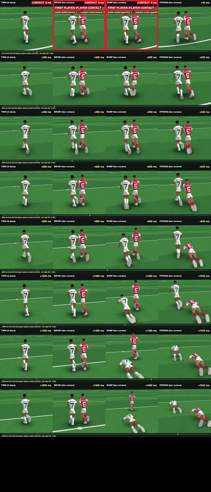
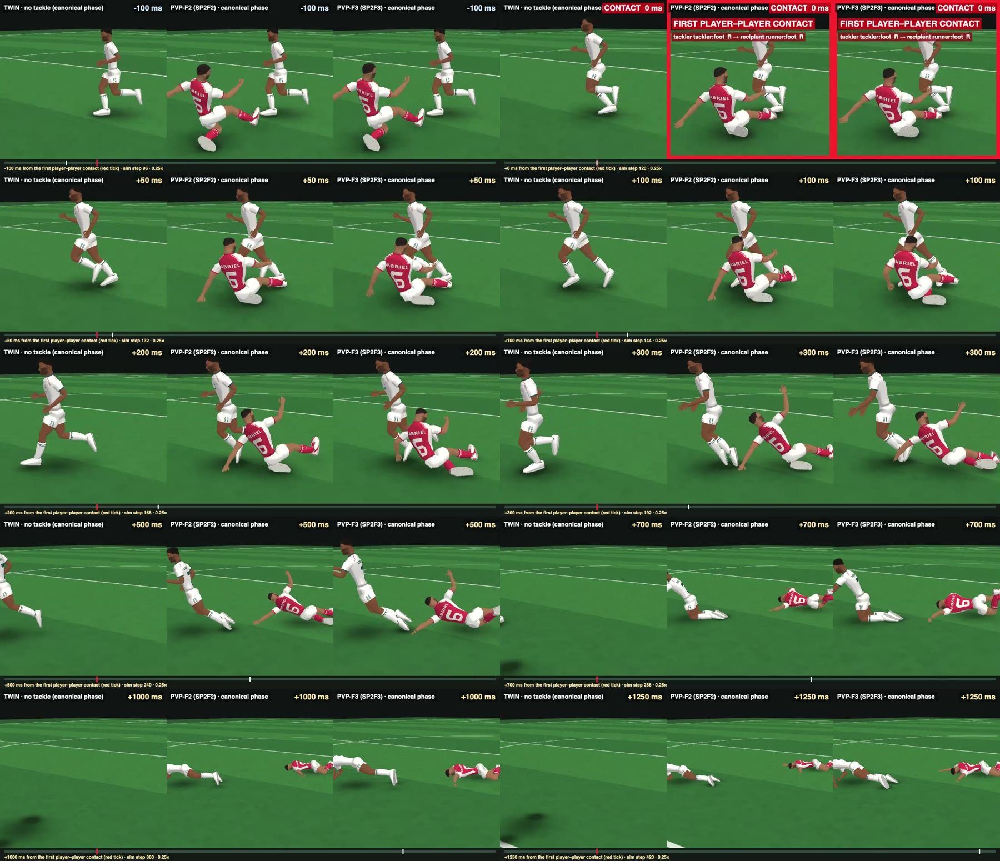
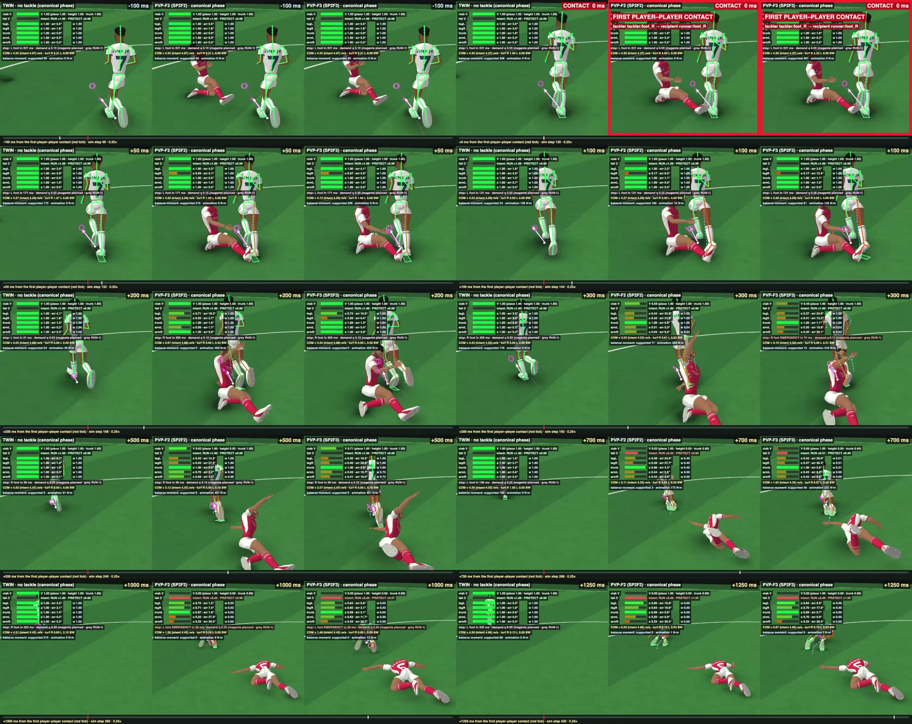
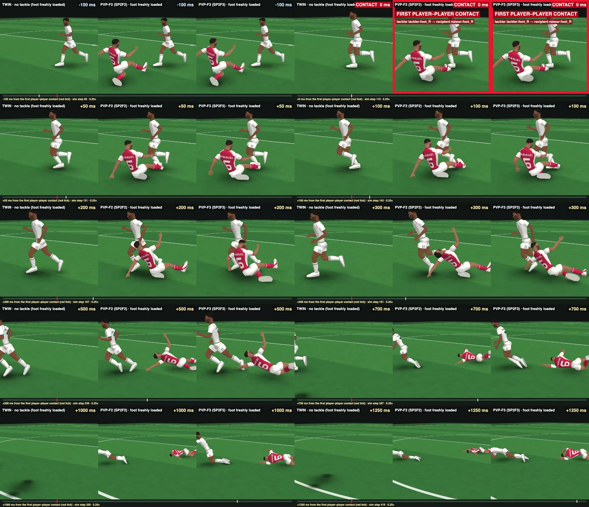
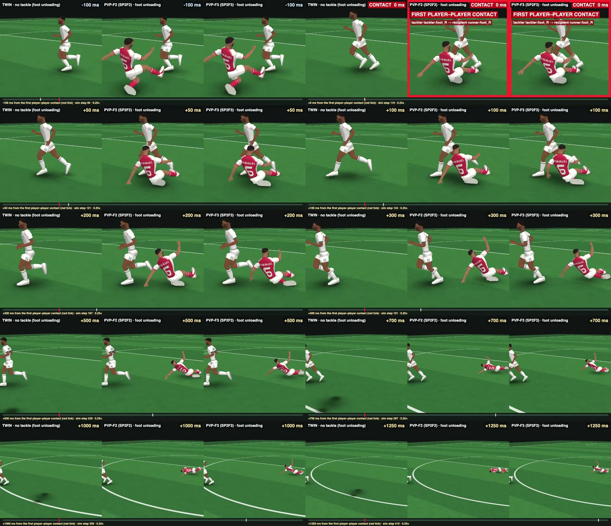

HAC-1: hybrid active-physics character V1 (night mission)
15 Oct 2026 · instruction sources/2026-10-15_user_instruction_night_mission_hybrid_active_physics_character_v1.md · report hac1/HAC1_REPORT.md · candidate history hac1/HAC1_LOG.md. I cannot play video in real time; I reviewed every clip as frame strips. Please watch the 1× videos: they are what the statuses below are about.
BRUSH RECOVERY: PASS
BUMP RECOVERY: PARTIAL
STRONG CONTACT RESPONSE: PASS
PROCEDURAL RECOVERY STEP: PARTIAL
CONTINUOUS ACTION VIABILITY: PASS
REGIONAL ANIMATION AUTHORITY: PASS
UNPHYSICAL PELVIS FORCE REMOVED/REPLACED: PARTIAL
TACKLED SUPPORT LEG OVERRIDES RUN: PASS
RUN STOPS WHEN PHYSICALLY IMPOSSIBLE: PARTIAL
SLICED-OUT RESPONSE CAN EMERGE WITHOUT SCRIPTED TACKLE FALL: PARTIAL
ACTIVE FALL/PROTECT RESPONSE: PARTIAL
NO-CONTACT TWIN REMAINS VALID: YES
DETERMINISM: PASS
CPU VIABLE FOR MATCH-SCALE DEVELOPMENT: PARTIAL
FULL PHYSICS-GENERATED RUNNING REQUIRED: NO
HYBRID ARCHITECTURE RECOMMENDED FOR TOUCHLINE: YES
READY FOR OWNER VISUAL REVIEW: YES
- The tackled recipient still runs on when the tackle meets a freshly loaded boot (EARLY): the boot is not swept (friction holds it), he keeps running for ≈ 0.5 s and only goes down when the tackler's body reaches his feet. Even at the canonical phase he stumbles and pitches forward over the tackler rather than having the legs taken from under him.
- A pushed runner shows almost no visible reaction: BRUSH and BUMP drift 13–33 cm off line, but the stride, trunk and arms look the same as the twin's, with no visible stagger and no visible recovery step (the hip offsets are 3–7°). The recovery happens, but it is mostly the support's velocity regulation and is not readable as a recovery.
- The falls (STRONG push, tackles) are slow folds onto the hands and knees rather than a footballer's tumble: the body sinks and curls forward with the arms out (the protect intent) instead of carrying its running momentum into the fall.
How HAC-1 works
Support integrity / lost support. A support foot that slips (0.8 → 2.0 m/s) or is displaced from its landing point (0.15 → 0.35 m) in the planted part of its stance stops carrying its share. The expected stance counts as lost if it was planted and then lost, or missed by more than 60 ms.
Recovery step. The free foot lands at RUN-1's own landing point + c·Δv (lateral, c = 0.15 s). It is applied as hip offsets in RUN-1's pelvis frame, ramped and rate-limited, and bounded by hip range, cross-over, the time left and reach. When support is lost, an emergency step re-times RUN-1's own touchdown pose (earliest = foot height ÷ 2.5 m/s + 60 ms). A swing-foot clearance response handles toe catches.
Active protect intent: chin tuck, mild trunk flexion, arms toward the fall direction, legs near-extended.
Support is HYBRID-RUN-1's gait support and pelvis moment, every term × the locomotion weight. When the fall commits, it vanishes, so nothing holds a falling athlete up. A fully physical alternative (support only through joints and contact) was built and is documented in section D; it does not yet run.
Reading the diagnostic views
- HUD (top left): action viability V (place / height / trunk); fall commitment C; the intent split RUN × w / PROTECT; per region the authority α (bar), tracking error and intent weight w; the next recovery step (which foot, in how many ms, demand q; red = emergency); COM speed against intent; turf loads; balance moment.
- On the turf: green polygons = the support (loaded soles); white dot = the COM's ground point; magenta ring = the PLANNED landing point of the recovery foot; grey ring = RUN-1's own landing point; dashed line = from the foot to its planned point.
- Skeleton colour: green = the animation's drive at full authority, red = physics winning. Dashed figure: RUN-1's joint targets on the physical pelvis, or (push diagnostic) RUN-1 itself at its intended place, so being knocked off line is the gap between the two.
A · No contact: ORIGINAL RUN-1 | HAC-1 | HAC-1 diagnostic
B · Shoulder-type disturbances: TWIN | BRUSH | BUMP | STRONG
A runs alone and receives a prescribed lateral impulse on the right upper arm over 0.1 s at 0.75 s: 30 / 60 / 100 N·s, bracketing HYBRID-RUN-1's measured shoulder contacts (47 / 77 / 102 N·s). Why not a second runner: RUN-1 cannot execute a turn or a sidestep. A runner with HYBRID-RUN-1's veer-and-straighten intent falls even alone (also under HYBRID-RUN-1's own runner), so it cannot serve as the pusher (report §B).
Diagnostic (dashed = RUN-1 at its intended place)
From the left (directional generality)
| push | impulse | sideways speed at +0.1 s | off the twin's line at +0.5 / +1 / +2 s | sideways speed back to the twin's | recovery step (largest hip offset) | V min | lowest authority | outcome |
|---|---|---|---|---|---|---|---|---|
| BRUSH, from the right | 30 N·s | 0.33 m/s | 10 / 13 / 12 cm | 0.78 s | 3.1° · 1 emergency steps | 1.00 | legL 1.00 · legR 1.00 · trunk 1.00 · armL 1.00 · armR 0.98 | runs on |
| BUMP, from the right | 60 N·s | 0.64 m/s | 20 / 27 / 28 cm | 0.78 s | 4.3° · no emergency | 1.00 | legL 1.00 · legR 1.00 · trunk 1.00 · armL 1.00 · armR 0.84 | runs on |
| STRONG, from the right | 100 N·s | 1.04 m/s | 32 / 45 / 59 cm | – | 7.1° · 49 emergency steps | 0.00 | legL 0.35 · legR 0.40 · trunk 0.96 · armL 0.22 · armR 0.30 | falls +1.04 s |
| BRUSH, from the left | 30 N·s | 0.30 m/s | 10 / 15 / 20 cm | 0.72 s | 3.7° · 3 emergency steps | 1.00 | legL 1.00 · legR 1.00 · trunk 1.00 · armL 1.00 · armR 1.00 | runs on |
| BUMP, from the left | 60 N·s | 0.61 m/s | 20 / 28 / 33 cm | 1.00 s | 6.7° · no emergency | 1.00 | legL 1.00 · legR 1.00 · trunk 1.00 · armL 0.94 · armR 1.00 | runs on |
| STRONG, from the left | 100 N·s | 1.04 m/s | 34 / 50 / 78 cm | – | 10.8° · 66 emergency steps | 0.00 | legL 0.33 · legR 0.42 · trunk 0.97 · armL 0.23 · armR 0.25 | falls +1.82 s |
Off-line distances are the COM against the twin (identical initial state, no push), measured toward the side the push sends it. "Back to the twin's" is when the pushed runner's sideways speed is back within 10 % of its peak difference from the twin's.
Two runners (HYBRID-RUN-1's fixture; secondary)

BRUSH: both run on (HYBRID-RUN-1: A fell 2.25 s after). BUMP: a 0.5 s shove (upper arms in contact 0.56 → 1.08 s); A falls 1.05 s after first contact. STRONG: both fall. B's own intent is not executable (it turns), so read only A.
C · Slide tackle: TWIN | PVP-F2 | PVP-F3 (frozen SP2F2 / SP2F3, PVP-1 canonical geometry)
Canonical phase


EARLY: the struck boot freshly loaded

UNLOAD: the struck boot unloading

REFERENCE3 | TWIN | F2 | F3 (local only, not in Git)
What the tackle changed, against each twin
| tackle | struck boot unloads after contact | struck boot at +100 ms: right / up from its landing | far boot down | pelvis height +200 / +500 ms | lowest leg authority R · L | fall commitment (C > 0.5) | outcome |
|---|---|---|---|---|---|---|---|
| F2 · EARLY (20 % of stance) | 0.171 s (twin 0.171) | 1 / 2 (twin -0 / 1) cm | +0.192 s (twin +0.275) | 0.97 / 0.86 (twin 0.94) m | 0.17 · 0.50 | +0.79 s | down +0.99 s |
| F3 · EARLY | 0.175 s (twin 0.171) | 5 / 0 (twin -0 / 1) cm | +0.188 s (twin +0.275) | 0.94 / 0.83 (twin 0.94) m | 0.15 · 0.18 | +1.00 s | down +1.12 s |
| F2 · CANON (59 %) | 0.092 s (twin 0.092) | 11 / 12 (twin 1 / 14) cm | +0.104 s (twin +0.213) | 0.99 / 0.80 (twin 0.96) m | 0.17 · 0.33 | +0.68 s | down +0.68 s |
| F3 · CANON | 0.104 s (twin 0.092) | 14 / 11 (twin 1 / 14) cm | +0.104 s (twin +0.213) | 0.98 / 0.82 (twin 0.96) m | 0.16 · 0.22 | +0.70 s | down +0.70 s |
| F2 · UNLOAD (87 %) | 0.025 s (twin 0.029) | 14 / 45 (twin 8 / 32) cm | +0.071 s (twin +0.075) | 0.92 / 0.92 (twin 0.93) m | 0.37 · 1.00 | never | runs on |
| F3 · UNLOAD | 0.025 s (twin 0.029) | 14 / 45 (twin 8 / 32) cm | +0.067 s (twin +0.075) | 0.92 / 0.92 (twin 0.93) m | 0.34 · 1.00 | never | runs on |
In every phase the struck boot unloads on the twin's own schedule: the tackle does not remove support earlier than running does. EARLY: the boot is not swept at all (it stays planted; ≈ 1.4 – 2 BW × turf friction 1.2 holds it against this boot-on-boot contact), and the recipient runs on and goes down later, when the tackler's sliding body reaches its feet. CANON: the boot is carried sideways, the far boot comes down early (a stumble step), the struck leg loses authority, and the body pitches forward. UNLOAD: the boot is already leaving; the recipient absorbs it.
D · The unphysical pelvis force
Physical replacement, attempted (
support.mode: "jt", HAC1_LOG §2): the stance leg's own joint torques realise the ground reaction (verified: commanded ≈ delivered); attitude through the ground reaction's direction, foot friction yaw, an angular-momentum-consistent entry, free-leg aiming, SIMBICON stance-hip control and compensation, chain transmission, a ground-limited stance-foot moment, a virtual leg, touchdown-aligned support profiles. Over 20 candidates, none ran longer than ≈ 2 s. Causes, in order of discovery: RUN-1's entry momentum spins the body; its limb motion swings yaw momentum ±4 kg·m²/s per stride and its pitch momentum averages +2.4 kg·m²/s; touchdowns come 30–100 ms early and cascade because RUN-1's clock lifts the leg before push-off ends; the ankle's inversion axis (≤ 79 N·m) rolls under the lateral ground reaction of a wide step; speed drifts to 5.5 m/s. Executing RUN-1 physically needs a SIMBICON-class balance layer or an angular-momentum-consistent intent: physics-generated locomotion, outside this mission, so I stopped rather than build it silently.Shipped (PARTIAL). The angular terms and the support itself are multiplied by the locomotion weight (1 − C): the moment can no longer hold up a failing or swept athlete — the HYBRID-RUN-1 complaint ('after collision it becomes 3–5× more consequential') is removed for the failing case — but while RUN is viable it is still applied (logged and drawn every step).
E · CPU (Apple M4, one thread, Node, Jolt WASM, 240 Hz)
| world | wall per 240 Hz step | physics step | passive tissue (all bodies) | HAC-1 law per character: total · viability · planning · tracking · support |
|---|---|---|---|---|
| NC: 1 HAC-1 runner (+1 parked body) | 1.01 ms | 0.29 ms | 0.36 ms | 0.142 · 0.0012 · 0.0042 · 0.088 · 0.0059 ms |
| SH_BUMP: 2 HAC-1 runners | 1.40 ms | 0.54 ms | 0.42 ms | 0.112 · 0.0008 · 0.0026 · 0.069 · 0.0030 ms |
| PVP_F2: 1 HAC-1 runner + 1 M1b tackler (PVP-F2) | 1.62 ms | 0.58 ms | 0.43 ms | 0.096 · 0.0011 · 0.0028 · 0.051 · 0.0016 ms |
Per active character ≈ 0.6 ms per 240 Hz step (physics ≈ 0.27, the V2 passive-tissue layer ≈ 0.21, the HAC-1 law ≈ 0.10–0.14, actuators ≈ 0.01); viability 0.001 ms and recovery planning 0.003–0.004 ms are negligible; tracking (with inverse-dynamics feed-forward) is ≈ 0.05–0.09 ms. 22 players would need ≈ 3.2 s of single-core CPU per simulated second: the physics rate and the passive layer, not HAC-1, are the expensive parts (candidates: 120 Hz, activating physics only near interactions as the architecture already intends, a cheaper passive layer).
F · Determinism and the regression battery
Every scene runs twice in one process; the two state-hash chains match (0 failures), and outcomes are checked against the stored expectations (node hac1/scripts/hac_test.mjs --expect hac1/evidence/HAC1_expectations.json).
| scene | hash | A falls (step) | B falls | first contact |
|---|---|---|---|---|
| NC A undisturbed | c251f503 | – | – | – |
| PVP_TWIN twin (CANON) | efaf697a | – | – | – |
| PVP_TWIN_EARLY twin (EARLY) | 1e87727b | – | – | – |
| PVP_TWIN_UNLOAD twin (UNLOAD) | 666d7f7e | – | – | – |
| PUSH_BRUSH B brush (push 30 N·s) | 7969e2d3 | – | – | – |
| PUSH_BUMP C bump (push 60 N·s) | 6c87078a | – | – | – |
| PUSH_STRONG D strong (push 100 N·s) | 8ce4a8ea | 429 | – | – |
| PUSH_BRUSH_OPP E brush, other side | 5f14bd91 | – | – | – |
| PUSH_BUMP_OPP E bump, other side | 8b886d5e | – | – | – |
| PUSH_STRONG_OPP E strong, other side | d143c5d8 | 616 | – | – |
| SH_BRUSH two runners: brush (HR1 fixture) | 8703084c | – | – | 220 |
| SH_BUMP two runners: bump (HR1 fixture) | 98100057 | 386 | – | 134 |
| SH_STRONG two runners: strong (HR1 fixture) | 2856af5d | 408 | 281 | 87 |
| SH2_BRUSH two runners: brush (SH2) | 47287727 | – | 447 | 220 |
| SH2_BUMP two runners: bump (SH2) | 8b06fcae | 354 | 291 | 130 |
| SH2_STRONG two runners: strong (SH2) | 7bf5dff7 | 340 | 262 | 90 |
| PVP_F2 F tackle F2 (CANON) | 6a2c601b | 282 | – | 120 |
| PVP_F3 G tackle F3 (CANON) | fc4f3d47 | 288 | – | 120 |
| PVP_F2_EARLY H tackle F2, early support | 7cfdbc17 | 356 | – | 119 |
| PVP_F3_EARLY H tackle F3, early support | dc7d7113 | 388 | – | 119 |
| PVP_F2_UNLOAD I tackle F2, unloading | 8846d47b | – | – | 119 |
| PVP_F3_UNLOAD I tackle F3, unloading | 2c679481 | – | – | 119 |
G · Authoritative-simulation boundary
review_artifacts/; nothing changes a match. If it decides outcomes, these must become authoritative simulation facts (not presentation): (1) the support state — which feet carry load, support integrity, lost support; (2) viability V and the fall commitment C, hence whether a player falls; (3) the resulting COM position and velocity and the fallen / protecting state; (4) the recovery step actually taken; (5) every non-contact force (the support pair and the pelvis moments are part of the gait abstraction); (6) the parameters, versioned with the simulation. Outcome neutrality: the RUN-1 intent, its clock and the physical response must be computed identically with rendering on or off — here renders only read records. The integration contract (how these facts reach the match simulation, at what rate, with what authority) is the next architectural decision and is not made tonight.H · Remaining blockers
- RUN-1 is not physically executable as authored (angular momentum, yaw swing, mean pitch momentum): fully physical support of RUN-1 needs a SIMBICON-class balance layer or an angular-momentum-consistent intent. Owner decision: which, if either; until then the hybrid keeps an explicit, viability-gated gait abstraction.
- RUN-1 cannot turn or sidestep: a runner whose intent turns falls even without contact (also under HYBRID-RUN-1). This blocks two-runner shoulder fixtures and any change of direction under contact; turning is a locomotion (RUN-2) problem.
- This tackle geometry cannot take a loaded foot: boot-on-boot contact sweeps an unloading foot but a loaded one is held by friction (≈ 1.4–2 BW × 1.2). A sliced-out fall needs the contact on the leg above the foot or the tackler's body blocking the next step — tackle choices; F2/F3 were not modified.
- The recovery step is small and not readable: 3–7° hip offsets; the full capture-point gain destabilised normal running and was halved (tuned). A visible stagger / recovery stride needs a larger, phase-aware step and upper-body balance reactions.
- Fall / protect is minimal: one brace pose scaled by the fall direction; falls fold slowly instead of carrying momentum; no get-up.
- CPU: ≈ 0.6 ms per active character per step at 240 Hz; match scale needs fewer simultaneously active bodies, a lower physics rate or a cheaper passive layer.